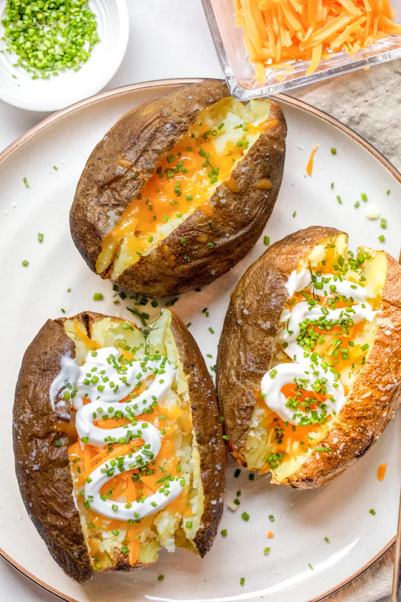

https://www.simplyrecipes.com/microwave-baked-potato-recipe-6931347
<main>
    <h1 id="header">Microwave Baked Potato</h1>
    <h3>It’s hard to improve on the baked potato except for one factor: time. This microwave baked potato<br /> recipe takes a fraction of the time and is just as delicious.</h3>

    

    <p>Is there any better side to a hearty meal than a tender, fluffy baked potato with all the toppings? I think not. While making<br />a baked potato is easy, it takes time. In fact, a potato can take over an hour to bake fully.</p>
    
    <p>This microwave baked potato cuts way down on the cook time with nearly identical results<br />
         (especially if you use my finish-in-the-oven hack below).</p>

    <div>
        <h2><em><strong>For a Better Baked Potato, Use the Microwave</strong></em></h2>
        <p>There are two main reasons to use a microwave to make a baked potato:</p>
        <ol>
            <li><strong>Time.</strong>You shave off over 75% of the cook time for a baked potato if you microwave it rather than bake it. Instead of baking<br /> for an hour,the potato cooks for about 10 minutes (plus 10 minutes in the oven if you want crispy skin). That’s a big deal!</li>
            <p></p>
            <li><strong>Fluffiness.</strong>Because a microwave steams the inside of the potato rather than baking it from the outside, the resulting potato<br /> has a fluffier inner texture. The only downside of microwaving potatoes is that the skin gets soggy and doesn’t have the crispy<br /> texture that you get from the oven. We can fix that with a quick trip in the oven.</li>
        </ol>
    </div>

    <div>
        <h2><em><strong>How to get crispy skin</strong></em></h2>
        <p>If you cherish the crispy potato skin of a baked potato (I know I do), there’s a trick to achieving a crisp exterior on a microwave potato.<br /> Once your potato is done in the microwave, place it on a baking sheet. Rub it with some olive oil and sprinkle it on all sides with kosher<br /> salt. Bake it in a hot oven for about 10 minutes and it’ll crisp up beautifully.</p>
        <p>This adds a few minutes to your total time, but it’s worth it for that crispy potato skin. No one will know you didn’t cook the potatoes<br /> in the oven from start to finish.</p>
    </div>    

    <div>
        <h2><em><strong>The Best Kind of Potatoes for Baked Potatoes</strong></em></h2>
        <p>There’s no need to overthink it.<strong>Russet potatoes make the best baked potatoes</strong>. They are economical, a good size for stuffing with toppings<br /> like cheese and butter, and have a really fluffy, tender interior that works perfectly for baked potatoes. </p>
        <p>Whether you’re using your microwave or the oven, use russet potatoes to make baked potatoes.</p>
        <p><i><strong>READ MORE</strong></i>:<a href="https://www.simplyrecipes.com/how_to_buy_and_store_potatoes/">How to buy and store potatoes</a></p>
    </div>


</main>
